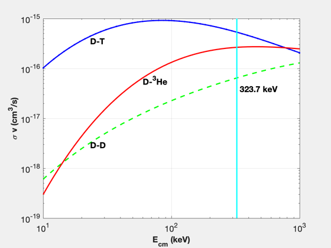

Plot collision crosssections for D-D, D-T and D-He3 reactions.
Shows the temperature for maximum difference between D-D and D-He3 crosssections.
This demo uses custom plotting to make the plots look nicer for publication.
%-------------------------------------------------------------------------- % Copyright (c) 2016 Princeton Satellite Systems, Inc. % All rights reserved. %-------------------------------------------------------------------------- % Since 2016.1 %-------------------------------------------------------------------------- r1 = {'D' 'D' 'D'}; r2 = {'T' 'D' 'He3'}; tK = logspace(1,3); s = SigmaV( r1, r2, tK )*1e6; h = NewFig('Crosssection'); loglog(tK,s(1,:),'b.-','LineWidth',2) hold on loglog(tK,s(2,:),'g--','LineWidth',2) loglog(tK,s(3,:),'r','LineWidth',2); grid YLabelS('\sigma v (cm^3/s)') XLabelS('E_{cm} (keV)') text(tK(10), 0.8*s(1,10),'D-T'); text(tK(10), 0.9*s(2,10),'D-D'); text(tK(20), 0.9*s(3,20),'D-^3He'); [dS,kMax] = max(s(3,:) - s(2,:)); yLim = get(gca,'ylim'); line([tK(kMax) tK(kMax)], yLim,'color','c','LineWidth',2); text(1.05*tK(kMax), 0.6*s(2,kMax),sprintf('%4.1f keV',tK(kMax))); set(gca,'YMinorGrid','off'); set(gca,'XMinorGrid','off'); set(gca,'FontSize',14) set(findall(h,'type','text'),'fontSize',14,... 'fontWeight','bold','FontName','helvetica') %------------------------------------------------------